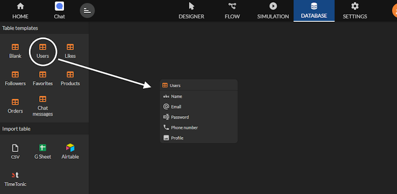
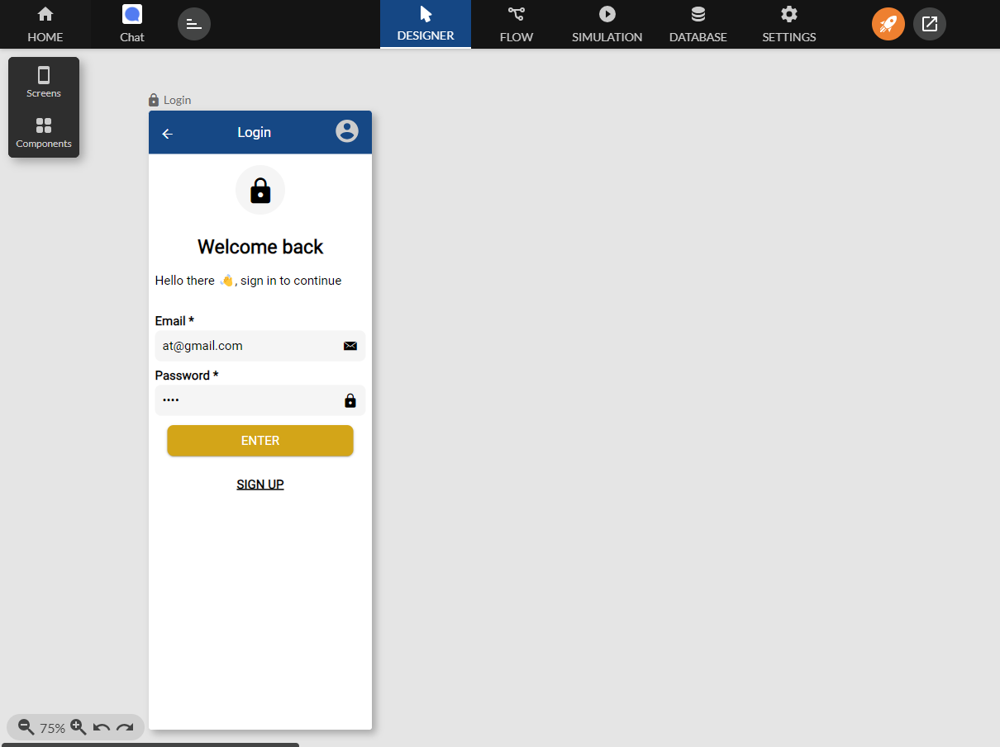
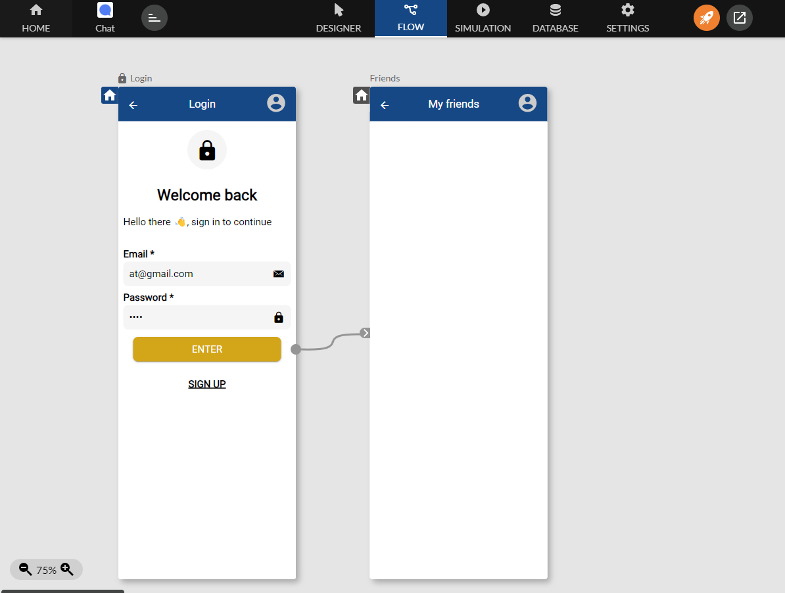
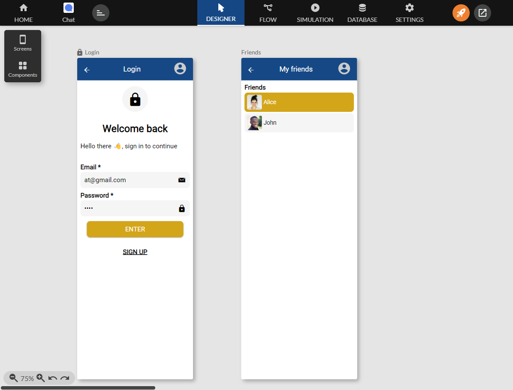
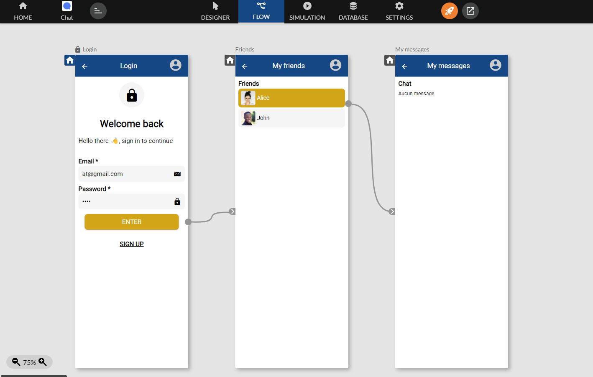
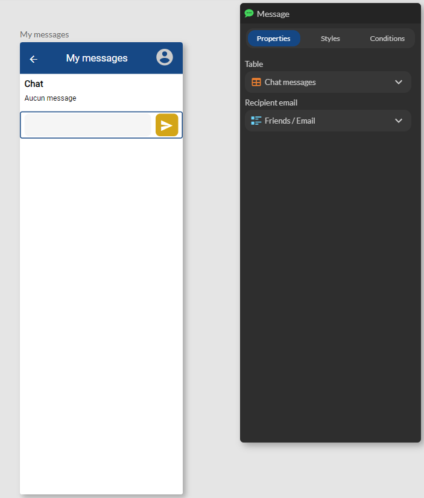

Chat
Ce guide explique comment mettre en place et configurer un composant Chat qui permet l'échange de messages entre 2 utilisateurs authentifiés.

Mise en place de l'authentification
Avant de commencer, il est essentiel de mettre en place une authentification pour garantir que seuls les utilisateurs autorisés peuvent échanger avec les autres utilisateurs.
Création de la table utilisateurs
Depuis l'onglet Database, glissez une table Users dans l'espace de travail. Zyllio va automatiquement créer les colonnes requises et également 2 utilisateurs d'exemple. Ces utilisateurs sont utiles pour tests et peuvent être modifiés voire supprimés par la suite.

Vous pouvez conserver des tables qui définissent des colonnes en Anglais. En revanche les écrans pourront s'afficher dans votre langue en utilisant la propriété Label disponible dans tous les composants.
Création de l'écran d'authentification
Depuis l'onglet Designer, glissez un écran Login dans l'espace de travail en sélectionnant la table Users. Vous obtenez cet écran prêt à l'emploi :

Puis un deuxième écran Header que l'on nommera Friends :

Affichage de la liste des amis
Reliez le bouton Enter, qui authentifie, avec l'écran Friends. Ainsi, si l'authentification réussit l'application mobile affichera l'écran relié (ici Friends) :

Ajouter dans l'écran Friends un composant List (ou tout autre composant de liste comme Grid ou Carousel) en utilisant la table Users :

Définissez un filtre sur ce composant List pour exclure l'utilisateur authentifié selon ce critère: Email is not equal to User/Email. Email représente la colonne Email de la table Users et User/Email est l'email de l'utilisateur authentifié (User) :

Création de l'écran My Messages
Création de la table Chat messages
Il est nécessaire de créer une table pour stocker les messages écrits par les utilisateurs. Pour cela, depuis l'onglet Database, glissez la table Chat messages dans l'espace de travail :

Création du composant Chat
Créez un écran nommé My messages et glissez un composant Chat depuis la liste des composants section Lists en sélectionnant la table Chat messages. Puis reliez les 2 écrans comme ci-dessous :

Le composant Chat n'affiche pas de message étant donné que la table est vide.
Filtrer les messages
Par défaut, le composant Chat affiche tous les messages envoyés et reçus par l'utilisateur authentifié. Ici le composant Chat doit afficher uniquement les messages échangés avec l'utilisateur sélectionné dans l'écran Friends. Pour cela, définissez la propriété Filtrer par email destinataire à la valeur Friends/Email qui est l'ami sélectionné dans l'écran Friends.
Ecrire des messages
Optionnellement, pour permettre l'écriture de message il faut utiliser le composant Message dans la section Form fields en sélectionnant encore la table Chat messages. Dans le cadre de ce tutoriel, l'utilisateur authentifié envoie un message à l'ami sélectionné dans l'écran Friends. Il faut donc renseigner la propriété Recipient email :
